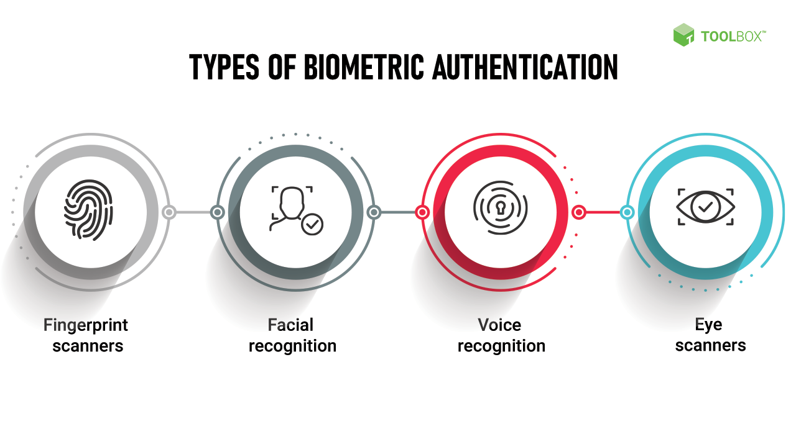
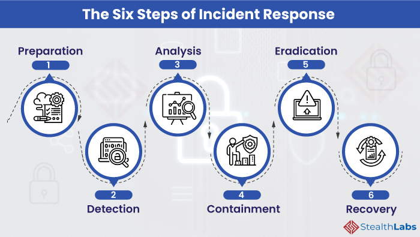
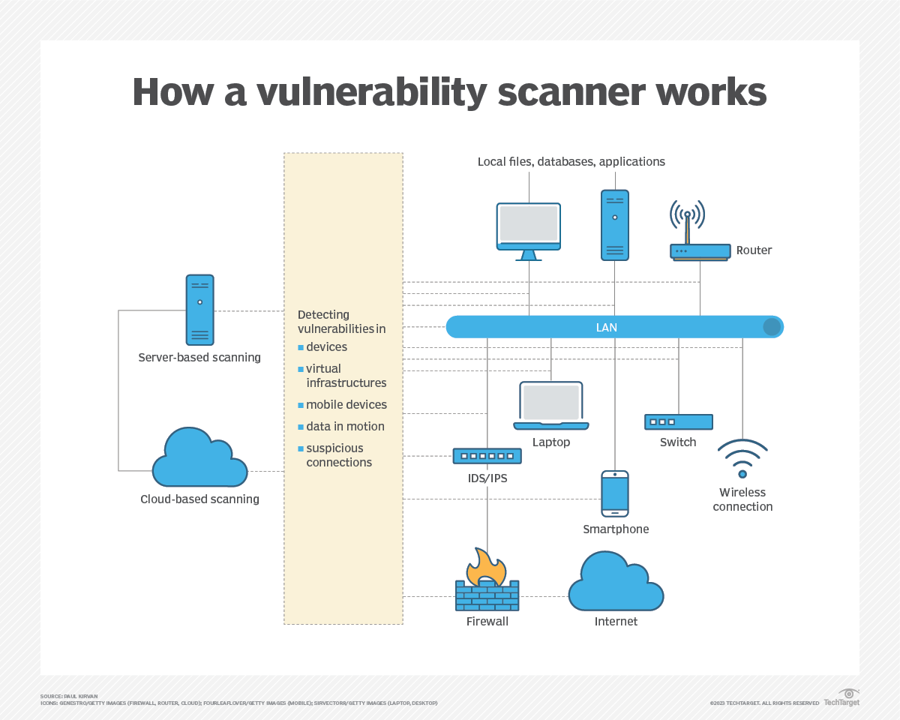
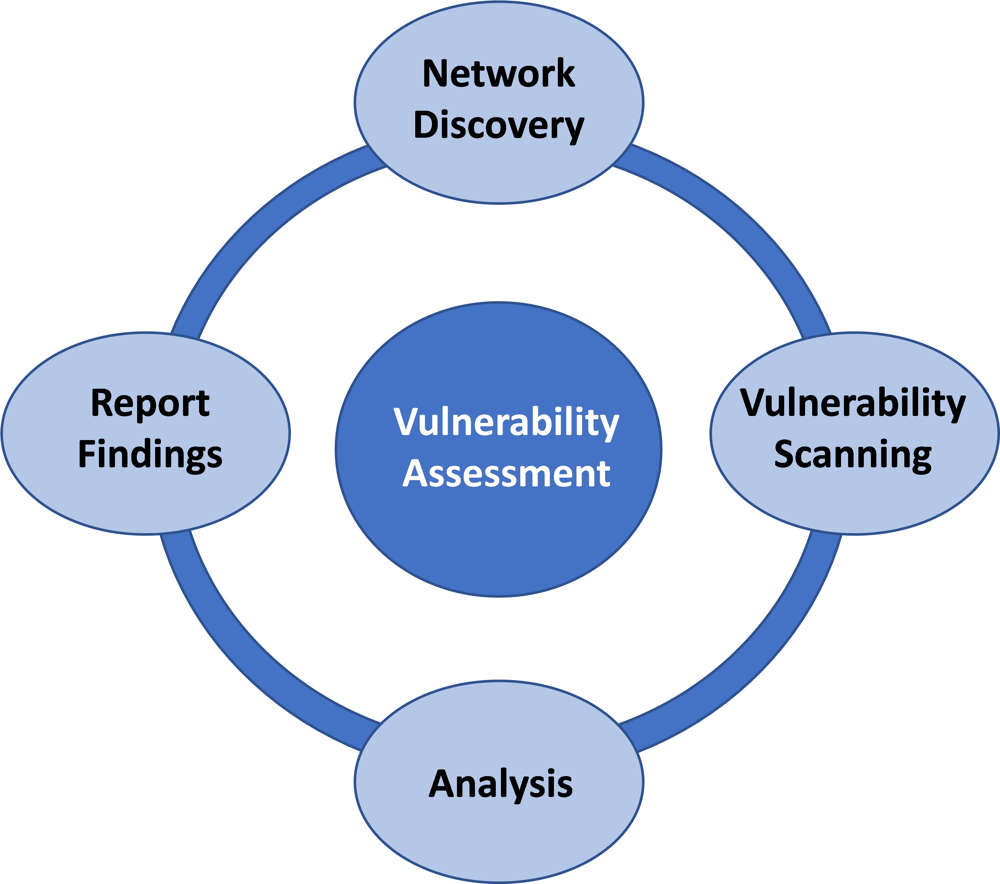

As a driven and ambitious young scholar, I'm pursuing a Bachelor's degree in Cyber Security at Lead City University, Ibadan. Currently, I'm a 100-level student in the Faculty of Natural and Applied Science, Department of Computer Science.
With a keen interest in the field of cybersecurity, I've already begun to build an impressive portfolio. I hold an Introduction to Splunk Certificate and am currently enrolled in CompTIA A+, CCNA, and Ethical Hacking courses. My passion for cloud security and penetration testing drives me to continuously develop my skills and knowledge.
My long-term aspirations are clear: I hope to become a renowned penetration tester and eventually rise to the position of Chief Information Security Officer (CISO). With dedication, perseverance, and a natural aptitude for cybersecurity, I'm confident I'm on the right path to achieving my goals.
I'm excited about the future and look forward to making a meaningful impact in the cybersecurity world.
My Projects
Project 1
Biometric Authentication
Biometric authentication refers to a cybersecurity process that verifies a user’s identity using their unique biological traits such as fingerprints, voices, retinas, and facial features. Biometric authentication systems store this information in order to verify a user’s identity when that user accesses their account. This type of authentication is usually more secure than traditional forms of multi-factor authentication.
Types of Authentication Methods
The following are a few common authentication methods used for network security designed to beat cybercriminals and some of the biometric authentication technologies below are ones that you might use daily.

The video below explains all to Biometric Authentication
Project 2
Incident Response
Incident response (sometimes called cybersecurity incident response) refers to an organization’s processes and technologies for detecting and responding to cyberthreats, security breaches or cyberattacks. A formal incident response plan enables cybersecurity teams to limit or prevent damage.
Ideally, an organization defines incident response processes and technologies in a formal incident response plan (IRP) that specifies how different types of cyberattacks should be identified, contained and resolved.
Steps to Incident Response
The image below explains steps to Incident Response

Incident Response Tools
Security Orchestration, Automation, and Response (SOAR)
User and Entity Behavior Analytics (UEBA)
Security Information and Event Management (SIEM)>
The video below explains all to Incident Response
Project 3
Network Vulnerability Scanning
Network vulnerability scanning is the process of inspecting and reporting potential vulnerabilities and security loopholes on a computer, network, web application or other device, including switches, routers, firewalls and wireless access points.
Vulnerabilities are triggered for various reasons, including open ports, network misconfigurations or outdated software running on the network. Vulnerabilities can be either known or unknown and can be easily exploited by hackers and used as entry points into a system.
Benefits of Network Vulnerability Scanning
Detects anomalies.
Provides proactive mitigation.
Inspects the entire attack surface.
Complies with cybersecurity regulations.
Provides cost savings.
Offers continuous monitoring.
Safeguards reputation.
Types of Network Vulnerability Scanning
Unauthenticated scanning.
Authenticated scanning.
Host-based scanning.
Network-based scanning.
Web application scanning.
Database scanning.
Port scanning.
Cloud vulnerability scanning.

Steps to Network Vulnerability Scanning
The image below shows Network vulnerability Assessment

The video below teaches about Network Vulnerability